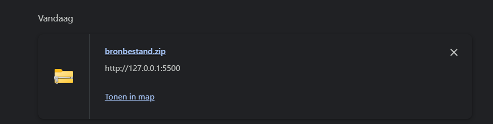
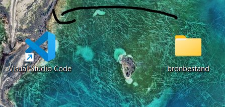
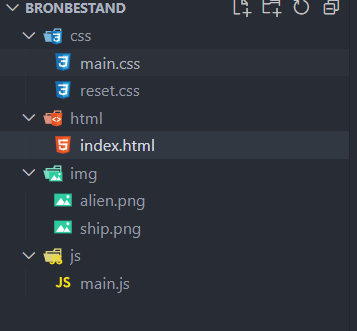
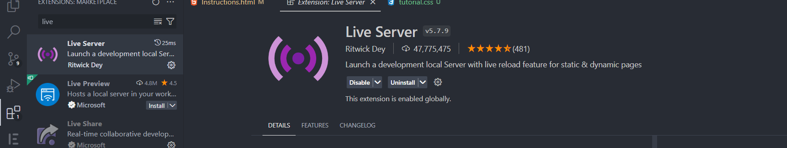
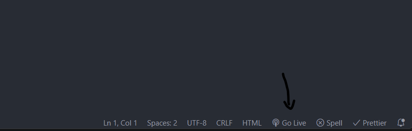
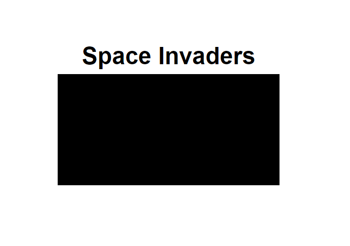
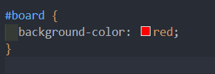
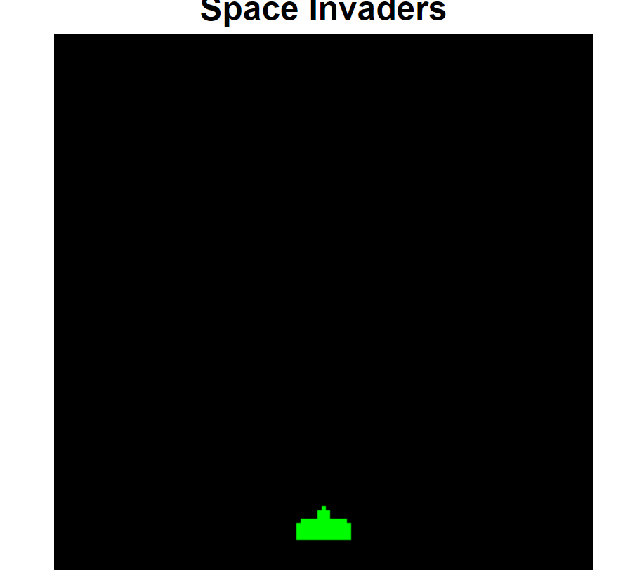

We gaan een simpele game maken genaamd "Space Invaders". Het doel van het spel is om met de pijltjes op je toetsenbord je ruimteschip van links naar rechts te bewegen en doormiddel van de spatiebalk kogels af te schieten naar de aliens om deze te verslaan.

Hier hebben we 3 codeertalen voor nodig, namelijk
- CSS
- HTML
- Javascript
STAP 1 - Mappenstructuur
We hebben een code-editor nodig. In de workshop gebruiken we Visual studio code.
1.1 Download de bronbestanden
Unzip het bestand en plaats dit bestand dan op je bureaublad.
1.2 bestand openen in VS code
Sleep het bestand van op je bureaublad naar het VS code logo dat ook op je bureaublad staat.
Je zou nu deze mappenstructuur in vs code moeten zien.
Alle bestanden zouden leeg moeten zijn behalve de reset.css file en in de map img zouden 2 afbeeldingen moeten zitten, namelijk alien.png en ship.png.
1.3 Installeer "live-server" extensie
Ga naar extensies (links op vs code) en zoek naar de extensie live-server.
Klik nu rechts onderaan op Go Live. Een blanco pagina zou nu moeten openen.
STAP 2 - HTML & CSS
2.1 HTML
Ga naar je index.html file en plak onderstaande code hierin en bewaar dit bestand.
<!DOCTYPE html>
<html lang="en">
<head>
<meta charset="UTF-8" />
<meta name="viewport" content="width=device-width, initial-scale=1.0" />
<title>Space invaders</title>
<link rel="stylesheet" href="/css/reset.css" />
<link rel="stylesheet" href="/css/main.css" />
</head>
<body>
<header></header>
<main>
<h1>Space Invaders</h1>
<canvas id="board">
</canvas>
</main>
<footer></footer>
<script src="/js/main.js"></script>
</body>
</html>
Je zou nu dit moeten zien op de pagina die je hebt geopend via live server

2.2 CSS
We gaan nu onze css toevoegen. Dit zal ervoor zorgen dat ons speelbord zichtbaar wordt en onze titel in het midden staat.
Ga in vs code naar je css folder en open main.css en plak onderstaande code hierin en bewaar dit bestand.
body {
text-align: center;
font-family: "Roboto", sans-serif;
display: flex;
align-items: center;
justify-content: center;
}
#board {
background-color: black;
}
Je zou nu dit moeten zien in je browser.
Als je wil kan je nu de kleur van je bord veranderen. Doe dit door de background-color te veranderen van het #board
Bijvoorbeeld, we veranderen de kleur van het bord naar rood.

STAP-3 Javascript
3.1 Tekenen van het speelbord
We gaan beginnen met het bepalen van de grootte van ons speelbord.
// de grootte van een tegel en het aantal rijen en kolommen op het speelbord
// tegelgrootte is in dit geval 32px
let tileSize = 32;
let rows = 16;
let columns = 16;
// variabelen voor het speelbord en de grootte ervan
let board;
let boardWidth = tileSize * columns;
let boardHeight = tileSize * rows;
let context;
In dit geval is ons speelbord verdeeld in 16 rijen en 16 kolommen. 1 vakje is 32 pixels groot. dus 1 kolom en 1 rij zijn 16 x 32 = 512 pixels groot
In het volgende stuk gaan we gebruik maken van een functie (Uitleg hiervan wordt in de workshop gegeven).
Onder onze variabelen plaatsen we deze functie en roepen we hem ook direct op.
function start() {
// Vind het speelbord en stel de grootte ervan in
board = document.getElementById("board");
board.width = boardWidth;
board.height = boardHeight;
context = board.getContext("2d");
}
start();
Deze functie zal ervoor zorgen dat het speelbord getekend wordt.
Je gaat nu in de browser dit op je scherm zien.
Proficiat! Het speelbord is getekend! Op naar de volgende stap!
3.2 Tekenen van het schip
Onder de variabelen van het speelbord, bepalen we de variabelen van ons ruimteschip.
// variabelen voor het ruimteschip
let shipWidth = tileSize * 2;
let shipHeight = tileSize;
let shipX = (tileSize * columns) / 2 - tileSize;
let shipY = tileSize * rows - tileSize * 2;
// het ruimteschip object met positie en grootte
let ship = {
x: shipX,
y: shipY,
width: shipWidth,
height: shipHeight,
};
// Definieer variabelen voor het ruimteschipafbeelding en de snelheid van het ruimteschip
let shipImg;
// schip zal 1 "tilesize" verschuiven bij het drukken van een pijltjestoets
let shipVelocityX = tileSize;
Nu dat de variabelen van ons schip er in staan, moeten we net zoals ons speelbord het schip tekenen
We voegen onder onze al bestaande code in de start functie deze code toe. onze start functie ziet er nu zo uit.
function start() {
// Vind het speelbord en stel de grootte ervan in
board = document.getElementById("board");
board.width = boardWidth;
board.height = boardHeight;
context = board.getContext("2d");
// Laad afbeeldingen van het ruimteschip en aliens
shipImg = new Image();
shipImg.src = "/img/ship.png";
shipImg.onload = function () {
// Tekenen van het ruimteschip
context.drawImage(shipImg, ship.x, ship.y, ship.width, ship.height);
};
}
Je ziet nu dit in de browser.
